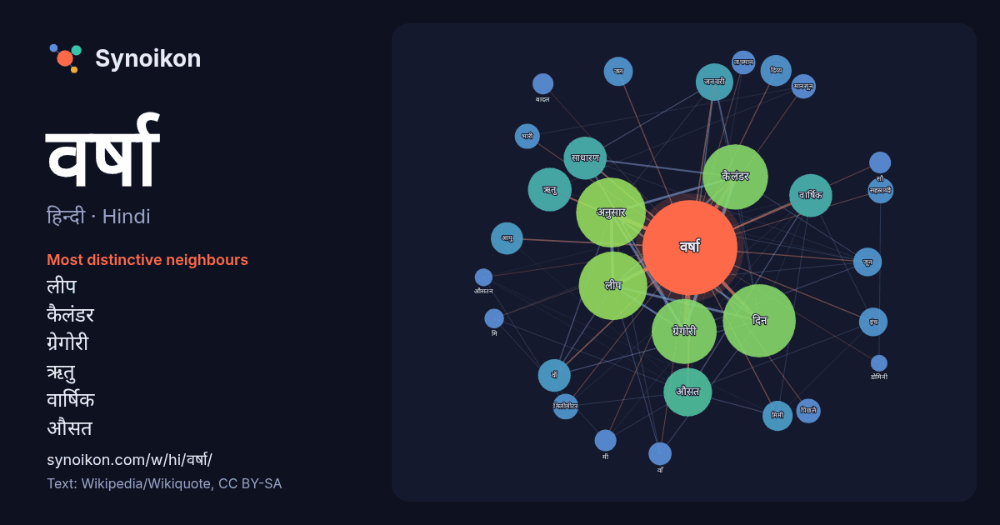

हिन्दी · Hindi · word of the day list
वर्षा
“rain” · The words found around it in 1425 instances from Hindi Wikipedia, Wikiquote.

Most distinctive neighbours
- लीप 125×
- कैलंडर 117×
- ग्रेगोरी 116×
- ऋतु 48×
- वार्षिक 39×
- औसत 37×
- साधारण 37×
- दिन 37×
- वॉ 31×
- दिव्य 26×
- मिमी 26×
- अनुसार 26×
- सहस्राब्दी 21×
- मिलीमीटर 20×
- जनवरी 19×
- इंच 19×
- आयु 19×
- मानसून 18×
- वाँ 17×
- बादल 14×
× = how many times more often than in general Hindi Wikipedia text.
Most frequent neighbours
- दिन 170
- अनुसार 155
- लीप 150
- कैलंडर 136
- ग्रेगोरी 135
- औसत 75
- ऋतु 61
- वार्षिक 59
- साधारण 59
- जनवरी 45
- अधिक 42
- कम 41
- भारत 36
- वॉ 34
- आयु 33
- दिव्य 31
- मिमी 29
- जल 27
- इंच 26
- जून 26
In context
- पर गिरता है। इसे वर्षा कहते हैं। वर्षा के प्रकार: संवाहनीय वर्षा पर्वतकृत वर्षा चक्रवातीय वर्षा महाभारत काल में कर्ण की पत्नी भी वर्षा थी। वायु में मिला Wikipedia snippets · वर्षा
- में मिल जाते हैं। अमल वर्षा केंद्र ओस्लो । वर्षा के जल का pH मान जब 5.6 से कम हो जाता है तो वह अम्लीय वर्षा कहलाती है। अम्लीय वर्षा का जल जब नदी में प्रवाहित Wikipedia snippets · अम्लीय वर्षा
- एक वर्ष या साल सूर्य की चारों ओर अपनी कक्षा में चलती पृथ्वी की कक्षीय अवधि है। पृथ्वी के अक्षीय झुकाव के कारण, एक वर्ष का कोर्स ऋतुओं के गुजरने को देखता Wikipedia snippets · वर्ष
- वनों की विशेषता है: उष्णकटिबंधीय वर्षा वनों के विपरीत, जिनमें शुष्क या गीला मौसम नहीं होता है, क्योंकि उनकी वर्षा पूरे वर्ष समान रूप से वितरित की जाती है। Wikipedia snippets · वर्षा ऋतु
- प्रकाश वर्ष (lightyear), जो प्रव (ly) द्वारा चिह्नित करा जाता है, लम्बाई की एक मापन इकाई है। यह लगभग 95 खरब (9.5 ट्रिलियन) किलोमीटर की होती है। अन्तर्राष्ट्रीय Wikipedia snippets · प्रकाश-वर्ष
- के रूप में द्रष्टिगत होते हैं। इसके साथ वर्षा ओला तथा तड़ित झंझा की अधिक सम्भावना रहती है। यह मुसलाधार वर्षा कराते है।इस प्रकार बादल भूमध्य रेखा ,पर पाया Wikipedia snippets · कपासी वर्षी बादल
- गुज़रने वाले धूमकेतु अक्सर उसपर उल्का वर्षा कर सकते हैं। मसलन स्विफ़्ट-टटल घूमकेतु से सम्बन्धित उल्का वर्षा हर वर्ष मध्य-जुलाई से मध्य-अगस्त के बीच दिखती Wikipedia snippets · उल्का वर्षा
- वर्षा राफ़ेल (अंग्रेज़ी: Varsha Raffel) (जन्म ;२० मार्च १९७५ ,गोरखपुर ,उत्तरप्रदेश ,भारत) एक भारतीय महिला वनडे क्रिकेट खिलाड़ी है। राफ़ेल एक अंतरराष्ट्रीय Wikipedia snippets · वर्षा राफ़ेल
More Hindi words
- इतिहास
- ईश्वर
- कार्य
- कुत्ता
- गर्मी
- गाना
- घंटी
- घड़ी
- घोड़ा
- चाय
- चित्रकला
- छाया
- जंगल
- जलवायु
- जीवन
- तूफ़ान
- दर्पण
- द्वीप
- नक्षत्र
- नमक
- परिवार
- पहाड़
- पानी
- पैसा
- प्रकृति
- बगीचा
- बिल्ली
- भाषा
- भोजन
- माता
- मानचित्र
- मृत्यु
- मौन
- रेगिस्तान
- रेलगाड़ी
- रोटी
- विज्ञान
- शक्ति
- शरद
- शहद
- शहर
- सड़क
- सत्य
- समय
- सर्दी
- सेतु
- स्वर्ण
- स्वास्थ्य
- हृदय
Precomputed on 2026-10-09 with default settings (±5 words, medium corpus). The interactive map can refresh it with live data.